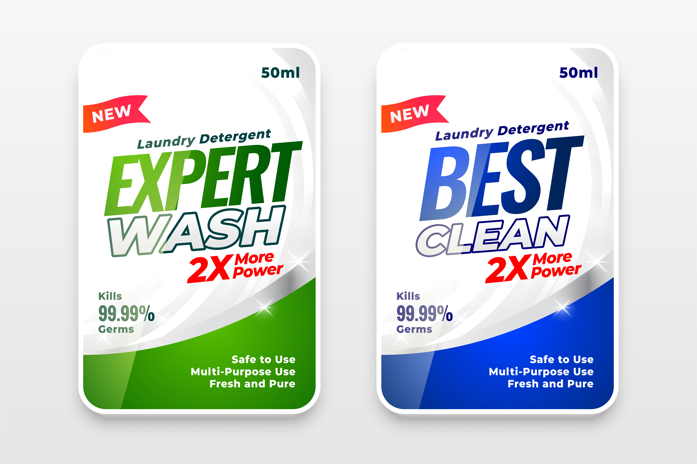

These are two of my clients stories
Client 1
Gender: Male
Disability: Psychiatric (Paranoid Schizophrenia)
Job: Cleaner
Benefits: Yes
I worked with this client until he passed away. He was nervous to get a job at first when I started working with him. He was worried about hours and losing his benefits and housing. I researched with him ways to work and keep his benefits. His work site was very understanding and allowed him to take off to lower his pay so he could keep his benefits. However he did have some over payments.
SSDI allows people to go 2x over their benefits and keep there full payment amount. 2 more times and they don’t get their SSDI payment that month. If it happens again they lose their benefits.
He worked a job that paid employees once every 2 weeks. Due to the calendar, two times a year employees received 3 paychecks. This client would earn over the federal income limits for SSDI. It also could impact his housing, and medical benefits. In one of the times he went over by $40. He lost his SSD. We requested a fair hearing and a trial date was set.
It was a chance for him to go before a judge and plead his case to keep his benefits. I researched ways for him to show medical related expenses as a reason he went over. The judge agreed and he was able to keep his benefits. I also assisted they client by keeping track of his pay calendar. I would meet with him and his manager and work out a plan to keep his benefits.
At the end of his life, I developed a relationship with his case manager to help with the benefit managements. When my client became ill I helped him put in a request for medical leave from his job. He was paid $15 an hour. Due to this reason he had limit his hours one day a week or risk putting himself well above the income limits. I worked with his employer’s HR department to ensure he was only paid a max of 16 hrs per week for the Family Medical Leave.
Client 2
Gender: Female
Disability: Medical and Developmental (Cerebral Palsy, Collapsed Trachea, and IQ of 45)
Job: Customer service, stocking
Limitations: spoke in a whisper, walked with a heavy limp.
I started working with this client because a coworker went out on medical leave and the case was transferred to me. I had no time to review her chart.
After I had her for a few weeks I meet with her case manager and spoke to her mother to gather information about this client. I found out she could read. Often clients couldn’t read which added to complications on work sites. However I quickly learned from working with her that she could read what was on a label. But didn’t know what the product was.
She could read labels like this (see image Expert Wash on the right), and not know where the product should go in the store.

With trial and error testing, I found the best way for her was to look for hints on the label. I worked with her through testing how to find ‘hints’ on where products would go in the store.
Before too long she was able to locate where items went in the store with little to no aid. The next work skill she needed to learn was helping customers.
This client was always happy and wanted to help people around the store. She knew the store very well, but she couldn’t speak loudly due to her collapsed trachea. I worked through testing and monitoring to find an answer to enable her to provide strong customers service.
She could use hand signs that the customers could follow such as pointing to locations in the store. She did, however, need a verbal cue from the customer to know she could leave. Thank you worked.
The manager reported he was happy with her work. The store had a second disabled staff member similar to my client. It was reported to me that my client was a stronger worker who knew the store better and was more able to help customers and do the other aspects of her job. The manager stated that if they had extra hours in the store he would bring her in to work more hours.